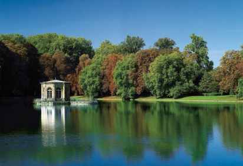
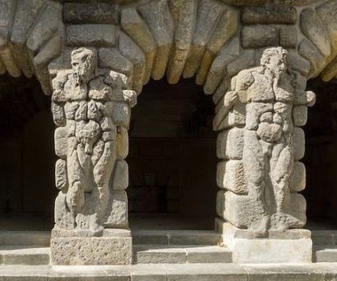
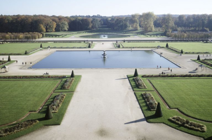

Estanque de carpas
Orientado al sur, el estanque de las carpas debe su nombre a la famosa carpa cuya presencia en Fontainebleau está atestiguada desde Enrique IV.

Gruta de pinos
Un ejemplo temprano de gruta artificial en Francia, la "grotte des pins ", final del ala Luis XV construida en lugar del ala de la galería de Ulises. ala de la Galería de Ulysse.

El Gran Césped
La creación del Gran Césped entre 1660 y 1664 -el mayor de Europa, con sus 14 hectáreas- por André Le Nôtre y Louis Le Vau, atestigua la la clarificación del espacio buscada por Luis XIV en Fontainebleau.